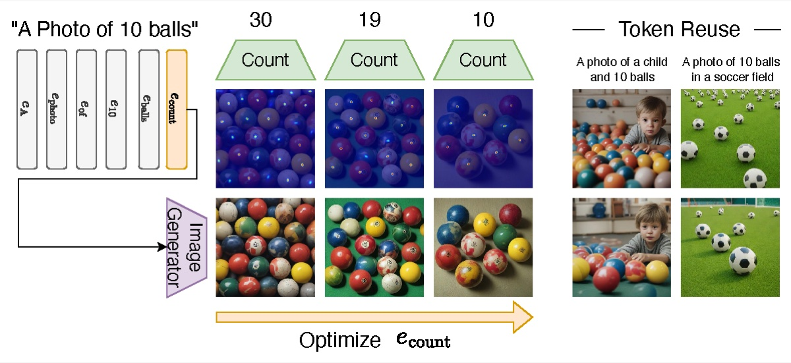

Bar-Ilan University · Department of Computer Science and Artificial Intelligence
The Multimodal Lab
Multimodal generative models, attention, and inference-time control.
Led by Idan Schwartz.
We study how models combine vision, language, audio, and video, with a focus on generation. A recurring theme is attention: designing attention modules that fuse many modalities, and using the attention of large generative models as a handle to control what they produce, without retraining. We also draw on cognitive science, asking how perception and comprehension arise in multimodal models.
Current directions include:
- Attention guidance in diffusion models: controlling timing, counts, and subject identity in generated images and videos
- Fusing modalities with frozen foundation models
- Attention modules and pooling for multimodal fusion and retrieval
- Measuring perceptiveness and comprehension of multimodal models
People
Principal Investigator
Assistant Professor, Bar-Ilan University
PhD students
- Ben Fishman (joint with Gal Chechik)
MSc students
- Gilad Carmel
- Mark Vexler
- Uriel Dolev (joint with Yoav Goldberg)
- Amit Ronen
- Aviv Weidenfeld
- Omri Keren
- Binyamin Ramati
- Yona Orunov
- Yuval Cohen
Alumni
- Shira Schiber (joint with Ofir Lindenbaum) · TempoControl, CVPR 2026
- Yair Shpitzer (joint with Gal Chechik) · SISO, CVPR 2026 Workshop
Highlights
S. Schiber, O. Lindenbaum, I. Schwartz · CVPR 2026
Steers cross-attention so concepts appear at the right moment in a generated video, without retraining.

O. Zafar, Y. Cohen, L. Wolf, I. Schwartz · WACV 2026
Optimizes a reusable counting token with detector feedback so generated images contain the requested number of objects.

Y. Shpitzer, G. Chechik, I. Schwartz · P13N Workshop, CVPR 2026
Personalizes a diffusion model from a single subject image, iterating between generation and editing.
A complete publication list is on Idan’s page.
Join us
We are looking for MSc and PhD students who are excited about multimodal generative models. Strong candidates usually have solid coding skills, some background in deep learning, and curiosity about how large models work. If that sounds like you, email Idan with your CV, transcripts, and a short note on what you would like to work on.
Contact
Department of Computer Science and Artificial Intelligence, Room 213
Building 503, Bar-Ilan University
Ramat Gan, Israel directions